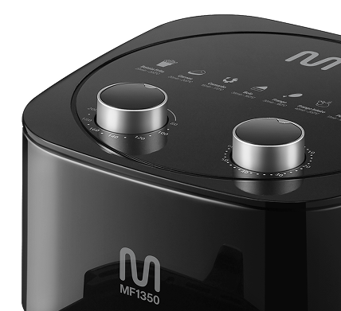
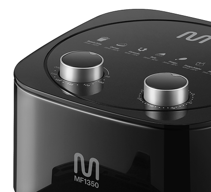

Air Fryer
3,5 L
MF1350
+ prática,
+ saudável
sem óleo
e com muitas possibilidades
GO252 | GO253
GO252 | GO253

Potência
de 1.350 W

4 em 1: assa,
frita, tosta
e gratina

Seletor de
temperatura
(80° – 200 °C)

Timer de até 60 minutos com aviso sonoro
OCUPA MENOS
ESPAÇO NA
SUA COZINHA
OCUPA MENOS
ESPAÇO NA
SUA COZINHA

Potência para o que
realmente importa
A Air Fryer MF1350 tem 1.350 W de potência
para transformar a sua rotina: menos tempo
na cozinha, mais tempo para
saborear pratos
incríveis, com texturas irresistíveis.
Viva uma experiência culinária que inspira.

O tamanho certo
Com cesto de 3,5 litros, a Air Fryer
MF1350 tem
capacidade para
preparar receitas e porções
em
quantidade adequada para você.
Muito mais sabor!
Com 361cm² de área útil, a MF1350
é ideal para quem quer praticidade,
sem abrir mão de variedade.
*Estimativa baseada na média do
tamanho
dos produtos em mercado.


Nuggets:
20 unidades

Mini-hamburgueres:
13 unidades
Muffins:
10 unidades
*Estimativa baseada na média do tamanho dos produtos do mercado. Imagens meramente ilustrativas.
Nas condições
ideais!
Seletor de temperatura de 80 a
200 °C e timer de até 60 minutos
com aviso sonoro.
Basta selecionar a temperatura e
o tempo para a receita e deixar o
resto com a Air Fryer!
 

Versatilidade máxima
Faça receitas gratinadas, assadas,
tostadas ou fritas!
Tudo isso sem uma gota de óleo
e com apenas uma Air Fryer.


Facilidade na limpeza
Limpar a Air Fryer nunca foi tão fácil!
Grade removível e revestimento antiaderente
para uma limpeza prática e sem esforço.

Especificações
técnicas:
- Tensão: 127 V ou 220 V
- Potência: 1.350 W
- Altura: 28,1 cm
- Largura: 23,4 cm
- Comprimento: 31,2 cm
- Peso: 2.640 g
Conteúdo da embalagem:
1 Air Fryer
1 Manual de instruções
Multilaser agora é Multi